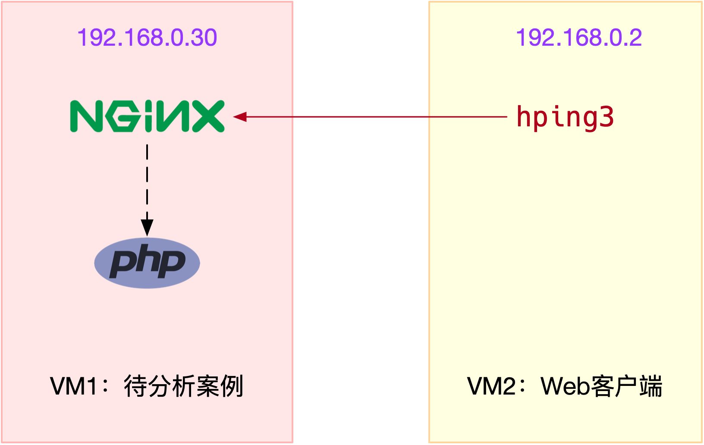

- 00 开篇词 别再让Linux性能问题成为你的绊脚石.md
- 01 如何学习Linux性能优化？.md
- 02 基础篇：到底应该怎么理解“平均负载”？.md
- 03 基础篇：经常说的 CPU 上下文切换是什么意思？（上）.md
- 04 基础篇：经常说的 CPU 上下文切换是什么意思？（下）.md
- 05 基础篇：某个应用的CPU使用率居然达到100%，我该怎么办？.md
- 06 案例篇：系统的 CPU 使用率很高，但为啥却找不到高 CPU 的应用？.md
- 07 案例篇：系统中出现大量不可中断进程和僵尸进程怎么办？（上）.md
- 08 案例篇：系统中出现大量不可中断进程和僵尸进程怎么办？（下）.md
- 09 基础篇：怎么理解Linux软中断？.md
- 10 案例篇：系统的软中断CPU使用率升高，我该怎么办？.md
- 11 套路篇：如何迅速分析出系统CPU的瓶颈在哪里？.md
- 12 套路篇：CPU 性能优化的几个思路.md
- 13 答疑（一）：无法模拟出 RES 中断的问题，怎么办？.md
- 14 答疑（二）：如何用perf工具分析Java程序？.md
- 15 基础篇：Linux内存是怎么工作的？.md
- 16 基础篇：怎么理解内存中的Buffer和Cache？.md
- 17 案例篇：如何利用系统缓存优化程序的运行效率？.md
- 18 案例篇：内存泄漏了，我该如何定位和处理？.md
- 19 案例篇：为什么系统的Swap变高了（上）.md
- 20 案例篇：为什么系统的Swap变高了？（下）.md
- 21 套路篇：如何“快准狠”找到系统内存的问题？.md
- 22 答疑（三）：文件系统与磁盘的区别是什么？.md
- 23 基础篇：Linux 文件系统是怎么工作的？.md
- 24 基础篇：Linux 磁盘I_O是怎么工作的（上）.md
- 25 基础篇：Linux 磁盘I_O是怎么工作的（下）.md
- 26 案例篇：如何找出狂打日志的“内鬼”？.md
- 27 案例篇：为什么我的磁盘I_O延迟很高？.md
- 28 案例篇：一个SQL查询要15秒，这是怎么回事？.md
- 29 案例篇：Redis响应严重延迟，如何解决？.md
- 30 套路篇：如何迅速分析出系统I_O的瓶颈在哪里？.md
- 31 套路篇：磁盘 I_O 性能优化的几个思路.md
- 32 答疑（四）：阻塞、非阻塞 I_O 与同步、异步 I_O 的区别和联系.md
- 33 关于 Linux 网络，你必须知道这些（上）.md
- 34 关于 Linux 网络，你必须知道这些（下）.md
- 35 基础篇：C10K 和 C1000K 回顾.md
- 36 套路篇：怎么评估系统的网络性能？.md
- 37 案例篇：DNS 解析时快时慢，我该怎么办？.md
- 38 案例篇：怎么使用 tcpdump 和 Wireshark 分析网络流量？.md
- 39 案例篇：怎么缓解 DDoS 攻击带来的性能下降问题？.md
- 40 案例篇：网络请求延迟变大了，我该怎么办？.md
- 41 案例篇：如何优化 NAT 性能？（上）.md
- 42 案例篇：如何优化 NAT 性能？（下）.md
- 43 套路篇：网络性能优化的几个思路（上）.md
- 44 套路篇：网络性能优化的几个思路（下）.md
- 45 答疑（五）：网络收发过程中，缓冲区位置在哪里？.md
- 46 案例篇：为什么应用容器化后，启动慢了很多？.md
- 47 案例篇：服务器总是时不时丢包，我该怎么办？（上）.md
- 48 案例篇：服务器总是时不时丢包，我该怎么办？（下）.md
- 49 案例篇：内核线程 CPU 利用率太高，我该怎么办？.md
- 50 案例篇：动态追踪怎么用？（上）.md
- 51 案例篇：动态追踪怎么用？（下）.md
- 52 案例篇：服务吞吐量下降很厉害，怎么分析？.md
- 53 套路篇：系统监控的综合思路.md
- 54 套路篇：应用监控的一般思路.md
- 55 套路篇：分析性能问题的一般步骤.md
- 56 套路篇：优化性能问题的一般方法.md
- 57 套路篇：Linux 性能工具速查.md
- 58 答疑（六）：容器冷启动如何性能分析？.md
- 加餐（一） 书单推荐：性能优化和Linux 系统原理.md
- 加餐（二） 书单推荐：网络原理和 Linux 内核实现.md
- 用户故事 “半路出家 ”，也要顺利拿下性能优化！.md
- 用户故事 运维和开发工程师们怎么说？.md
- 结束语 愿你攻克性能难关.md
10 案例篇：系统的软中断CPU使用率升高，我该怎么办？
你好，我是倪朋飞。
上一期我给你讲了软中断的基本原理，我们先来简单复习下。
中断是一种异步的事件处理机制，用来提高系统的并发处理能力。中断事件发生，会触发执行中断处理程序，而中断处理程序被分为上半部和下半部这两个部分。
上半部对应硬中断，用来快速处理中断；
下半部对应软中断，用来异步处理上半部未完成的工作。
Linux 中的软中断包括网络收发、定时、调度、RCU锁等各种类型，我们可以查看 proc 文件系统中的 /proc/softirqs ，观察软中断的运行情况。
在 Linux 中，每个 CPU 都对应一个软中断内核线程，名字是 ksoftirqd/CPU编号。当软中断事件的频率过高时，内核线程也会因为CPU 使用率过高而导致软中断处理不及时，进而引发网络收发延迟、调度缓慢等性能问题。
软中断 CPU 使用率过高也是一种最常见的性能问题。今天，我就用最常见的反向代理服务器 Nginx 的案例，教你学会分析这种情况。
案例
你的准备
接下来的案例基于 Ubuntu 18.04，也同样适用于其他的 Linux 系统。我使用的案例环境是这样的：
机器配置：2 CPU、8 GB 内存。
预先安装 docker、sysstat、sar 、hping3、tcpdump 等工具，比如 apt-get install docker.io sysstat hping3 tcpdump。
这里我又用到了三个新工具，sar、 hping3 和 tcpdump，先简单介绍一下：
sar 是一个系统活动报告工具，既可以实时查看系统的当前活动，又可以配置保存和报告历史统计数据。
hping3 是一个可以构造 TCP/IP 协议数据包的工具，可以对系统进行安全审计、防火墙测试等。
tcpdump 是一个常用的网络抓包工具，常用来分析各种网络问题。
本次案例用到两台虚拟机，我画了一张图来表示它们的关系。

你可以看到，其中一台虚拟机运行 Nginx ，用来模拟待分析的 Web 服务器；而另一台当作Web 服务器的客户端，用来给 Nginx 增加压力请求。使用两台虚拟机的目的，是为了相互隔离，避免“交叉感染”。
接下来，我们打开两个终端，分别 SSH 登录到两台机器上，并安装上面提到的这些工具。
同以前的案例一样，下面的所有命令都默认以 root 用户运行，如果你是用普通用户身份登陆系统，请运行 sudo su root 命令切换到 root 用户。
如果安装过程中有什么问题，同样鼓励你先自己搜索解决，解决不了的，可以在留言区向我提问。如果你以前已经安装过了，就可以忽略这一点了。
操作和分析
安装完成后，我们先在第一个终端，执行下面的命令运行案例，也就是一个最基本的 Nginx 应用：
# 运行Nginx服务并对外开放80端口
$ docker run -itd --name=nginx -p 80:80 nginx
然后，在第二个终端，使用 curl 访问 Nginx 监听的端口，确认 Nginx 正常启动。假设 192.168.0.30 是 Nginx 所在虚拟机的 IP 地址，运行 curl 命令后你应该会看到下面这个输出界面：
$ curl http://192.168.0.30/
<!DOCTYPE html>
<html>
<head>
<title>Welcome to nginx!</title>
...
接着，还是在第二个终端，我们运行 hping3 命令，来模拟 Nginx 的客户端请求：
# -S参数表示设置TCP协议的SYN（同步序列号），-p表示目的端口为80
# -i u100表示每隔100微秒发送一个网络帧
# 注：如果你在实践过程中现象不明显，可以尝试把100调小，比如调成10甚至1
$ hping3 -S -p 80 -i u100 192.168.0.30
现在我们再回到第一个终端，你应该发现了异常。是不是感觉系统响应明显变慢了，即便只是在终端中敲几个回车，都得很久才能得到响应？这个时候应该怎么办呢？
虽然在运行 hping3 命令时，我就已经告诉你，这是一个 SYN FLOOD 攻击，你肯定也会想到从网络方面入手，来分析这个问题。不过，在实际的生产环境中，没人直接告诉你原因。
所以，我希望你把 hping3 模拟 SYN FLOOD 这个操作暂时忘掉，然后重新从观察到的问题开始，分析系统的资源使用情况，逐步找出问题的根源。
那么，该从什么地方入手呢？刚才我们发现，简单的 SHELL 命令都明显变慢了，先看看系统的整体资源使用情况应该是个不错的注意，比如执行下 top 看看是不是出现了 CPU 的瓶颈。我们在第一个终端运行 top 命令，看一下系统整体的资源使用情况。
# top运行后按数字1切换到显示所有CPU
$ top
top - 10:50:58 up 1 days, 22:10, 1 user, load average: 0.00, 0.00, 0.00
Tasks: 122 total, 1 running, 71 sleeping, 0 stopped, 0 zombie
%Cpu0 : 0.0 us, 0.0 sy, 0.0 ni, 96.7 id, 0.0 wa, 0.0 hi, 3.3 si, 0.0 st
%Cpu1 : 0.0 us, 0.0 sy, 0.0 ni, 95.6 id, 0.0 wa, 0.0 hi, 4.4 si, 0.0 st
...
PID USER PR NI VIRT RES SHR S %CPU %MEM TIME+ COMMAND
7 root 20 0 0 0 0 S 0.3 0.0 0:01.64 ksoftirqd/0
16 root 20 0 0 0 0 S 0.3 0.0 0:01.97 ksoftirqd/1
2663 root 20 0 923480 28292 13996 S 0.3 0.3 4:58.66 docker-containe
3699 root 20 0 0 0 0 I 0.3 0.0 0:00.13 kworker/u4:0
3708 root 20 0 44572 4176 3512 R 0.3 0.1 0:00.07 top
1 root 20 0 225384 9136 6724 S 0.0 0.1 0:23.25 systemd
2 root 20 0 0 0 0 S 0.0 0.0 0:00.03 kthreadd
...
这里你有没有发现异常的现象？我们从第一行开始，逐个看一下：
平均负载全是0，就绪队列里面只有一个进程（1 running）。
每个CPU的使用率都挺低，最高的CPU1的使用率也只有4.4%，并不算高。
再看进程列表，CPU使用率最高的进程也只有 0.3%，还是不高呀。
那为什么系统的响应变慢了呢？既然每个指标的数值都不大，那我们就再来看看，这些指标对应的更具体的含义。毕竟，哪怕是同一个指标，用在系统的不同部位和场景上，都有可能对应着不同的性能问题。
仔细看 top 的输出，两个 CPU的使用率虽然分别只有 3.3%和4.4%，但都用在了软中断上；而从进程列表上也可以看到，CPU使用率最高的也是软中断进程 ksoftirqd。看起来，软中断有点可疑了。
根据上一期的内容，既然软中断可能有问题，那你先要知道，究竟是哪类软中断的问题。停下来想想，上一节我们用了什么方法，来判断软中断类型呢？没错，还是proc文件系统。观察 /proc/softirqs 文件的内容，你就能知道各种软中断类型的次数。
不过，这里的各类软中断次数，又是什么时间段里的次数呢？它是系统运行以来的累积中断次数。所以我们直接查看文件内容，得到的只是累积中断次数，对这里的问题并没有直接参考意义。因为，这些中断次数的变化速率才是我们需要关注的。
那什么工具可以观察命令输出的变化情况呢？我想你应该想起来了，在前面案例中用过的 watch 命令，就可以定期运行一个命令来查看输出；如果再加上 -d 参数，还可以高亮出变化的部分，从高亮部分我们就可以直观看出，哪些内容变化得更快。
比如，还是在第一个终端，我们运行下面的命令：
$ watch -d cat /proc/softirqs
CPU0 CPU1
HI: 0 0
TIMER: 1083906 2368646
NET_TX: 53 9
NET_RX: 1550643 1916776
BLOCK: 0 0
IRQ_POLL: 0 0
TASKLET: 333637 3930
SCHED: 963675 2293171
HRTIMER: 0 0
RCU: 1542111 1590625
通过 /proc/softirqs 文件内容的变化情况，你可以发现， TIMER（定时中断）、NET_RX（网络接收）、SCHED（内核调度）、RCU（RCU锁）等这几个软中断都在不停变化。
其中，NET_RX，也就是网络数据包接收软中断的变化速率最快。而其他几种类型的软中断，是保证 Linux 调度、时钟和临界区保护这些正常工作所必需的，所以它们有一定的变化倒是正常的。
那么接下来，我们就从网络接收的软中断着手，继续分析。既然是网络接收的软中断，第一步应该就是观察系统的网络接收情况。这里你可能想起了很多网络工具，不过，我推荐今天的主人公工具 sar 。
sar 可以用来查看系统的网络收发情况，还有一个好处是，不仅可以观察网络收发的吞吐量（BPS，每秒收发的字节数），还可以观察网络收发的 PPS，即每秒收发的网络帧数。
我们在第一个终端中运行 sar 命令，并添加 -n DEV 参数显示网络收发的报告：
# -n DEV 表示显示网络收发的报告，间隔1秒输出一组数据
$ sar -n DEV 1
15:03:46 IFACE rxpck/s txpck/s rxkB/s txkB/s rxcmp/s txcmp/s rxmcst/s %ifutil
15:03:47 eth0 12607.00 6304.00 664.86 358.11 0.00 0.00 0.00 0.01
15:03:47 docker0 6302.00 12604.00 270.79 664.66 0.00 0.00 0.00 0.00
15:03:47 lo 0.00 0.00 0.00 0.00 0.00 0.00 0.00 0.00
15:03:47 veth9f6bbcd 6302.00 12604.00 356.95 664.66 0.00 0.00 0.00 0.05
对于 sar 的输出界面，我先来简单介绍一下，从左往右依次是：
第一列：表示报告的时间。
第二列：IFACE 表示网卡。
第三、四列：rxpck/s 和 txpck/s 分别表示每秒接收、发送的网络帧数，也就是 PPS。
第五、六列：rxkB/s 和 txkB/s 分别表示每秒接收、发送的千字节数，也就是 BPS。
后面的其他参数基本接近0，显然跟今天的问题没有直接关系，你可以先忽略掉。
我们具体来看输出的内容，你可以发现：
对网卡 eth0来说，每秒接收的网络帧数比较大，达到了 12607，而发送的网络帧数则比较小，只有 6304；每秒接收的千字节数只有 664 KB，而发送的千字节数更小，只有 358 KB。
docker0 和 veth9f6bbcd 的数据跟 eth0 基本一致，只是发送和接收相反，发送的数据较大而接收的数据较小。这是 Linux 内部网桥转发导致的，你暂且不用深究，只要知道这是系统把 eth0 收到的包转发给 Nginx 服务即可。具体工作原理，我会在后面的网络部分详细介绍。
从这些数据，你有没有发现什么异常的地方？
既然怀疑是网络接收中断的问题，我们还是重点来看 eth0 ：接收的 PPS 比较大，达到 12607，而接收的 BPS 却很小，只有 664 KB。直观来看网络帧应该都是比较小的，我们稍微计算一下，664*1024⁄12607 = 54 字节，说明平均每个网络帧只有 54 字节，这显然是很小的网络帧，也就是我们通常所说的小包问题。
那么，有没有办法知道这是一个什么样的网络帧，以及从哪里发过来的呢？
使用 tcpdump 抓取 eth0 上的包就可以了。我们事先已经知道， Nginx 监听在 80 端口，它所提供的 HTTP 服务是基于 TCP 协议的，所以我们可以指定 TCP 协议和 80 端口精确抓包。
接下来，我们在第一个终端中运行 tcpdump 命令，通过 -i eth0 选项指定网卡 eth0，并通过 tcp port 80 选项指定 TCP 协议的 80 端口：
# -i eth0 只抓取eth0网卡，-n不解析协议名和主机名
# tcp port 80表示只抓取tcp协议并且端口号为80的网络帧
$ tcpdump -i eth0 -n tcp port 80
15:11:32.678966 IP 192.168.0.2.18238 > 192.168.0.30.80: Flags [S], seq 458303614, win 512, length 0
...
从 tcpdump 的输出中，你可以发现
192.168.0.2.18238 > 192.168.0.30.80 ，表示网络帧从 192.168.0.2 的 18238 端口发送到 192.168.0.30 的 80 端口，也就是从运行 hping3 机器的 18238 端口发送网络帧，目的为 Nginx 所在机器的 80 端口。
Flags [S] 则表示这是一个 SYN 包。
再加上前面用 sar 发现的， PPS 超过 12000的现象，现在我们可以确认，这就是从 192.168.0.2 这个地址发送过来的 SYN FLOOD 攻击。
到这里，我们已经做了全套的性能诊断和分析。从系统的软中断使用率高这个现象出发，通过观察 /proc/softirqs 文件的变化情况，判断出软中断类型是网络接收中断；再通过 sar 和 tcpdump ，确认这是一个 SYN FLOOD 问题。
SYN FLOOD 问题最简单的解决方法，就是从交换机或者硬件防火墙中封掉来源 IP，这样 SYN FLOOD 网络帧就不会发送到服务器中。
至于 SYN FLOOD 的原理和更多解决思路，你暂时不需要过多关注，后面的网络章节里我们都会学到。
案例结束后，也不要忘了收尾，记得停止最开始启动的 Nginx 服务以及 hping3 命令。
在第一个终端中，运行下面的命令就可以停止 Nginx 了：
# 停止 Nginx 服务
$ docker rm -f nginx
然后到第二个终端中按下 Ctrl+C 就可以停止 hping3。
小结
软中断CPU使用率（softirq）升高是一种很常见的性能问题。虽然软中断的类型很多，但实际生产中，我们遇到的性能瓶颈大多是网络收发类型的软中断，特别是网络接收的软中断。
在碰到这类问题时，你可以借用 sar、tcpdump 等工具，做进一步分析。不要害怕网络性能，后面我会教你更多的分析方法。
思考
最后，我想请你一起来聊聊，你所碰到的软中断问题。你所碰到的软中问题是哪种类型，是不是这个案例中的小包问题？你又是怎么分析它们的来源并解决的呢？可以结合今天的案例，总结你自己的思路和感受。如果遇到过其他问题，也可以留言给我一起解决。
欢迎在留言区和我讨论，也欢迎你把这篇文章分享给你的同事、朋友。我们一起在实战中演练，在交流中进步。

© 2019 - 2023 Liangliang Lee. Powered by gin and hexo-theme-book.